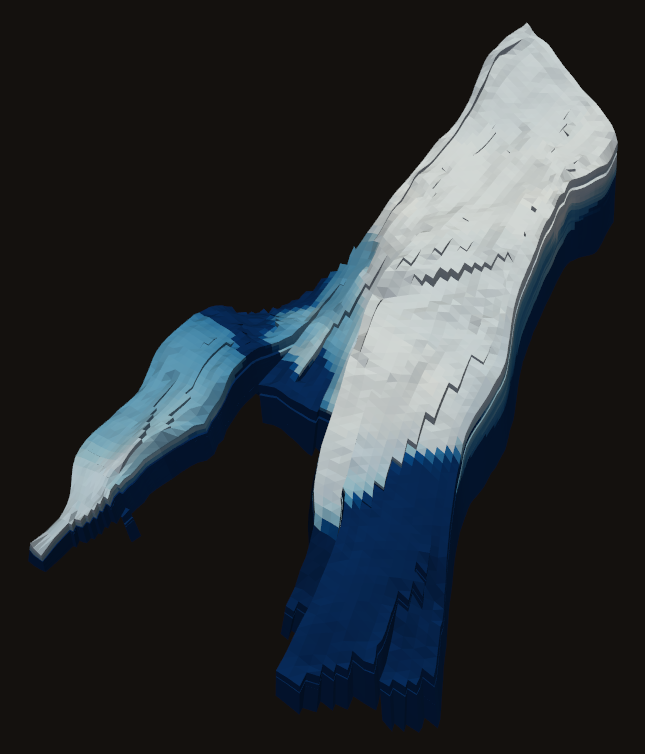
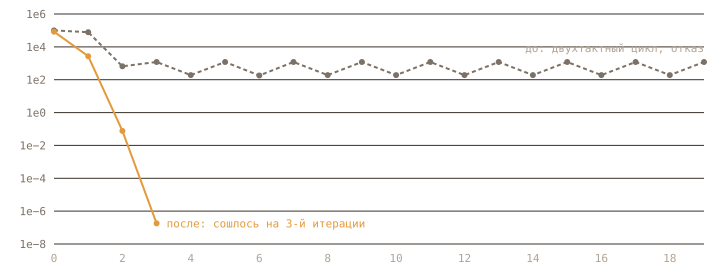

релиз · 25 октября 2026
Девять лет Norne.
Без единой остановки.
Наш полностью неявный black-oil солвер на PyTorch прошёл открытое месторождение Norne от ноября 1997 до декабря 2006 — теперь с честной физикой ствола нагнетательных скважин и точным Якобианом. На одной видеокарте, по обычному DATA-файлу Eclipse.

Гидродинамический симулятор — это программа, которая по описанию пласта и расписанию скважин отвечает на вопрос: сколько нефти, воды и газа выйдет наружу и что останется внизу. Индустриальный стандарт — Eclipse, коммерческий и закрытый. Мы пишем свой: открытый, на PyTorch, целиком на GPU, и проверяем его на том же входе, что и Eclipse.
Главный экзамен — Norne, модель реального месторождения в Норвежском море от Equinor: сетка 46×112×22 с разломами, жирный газ, 36 скважин, девять лет истории с остановками и сменой режимов. Прошлый прогон проходил её целиком, но с упрощением в стволе нагнетательных скважин. В этом релизе упрощения нет.
01 — что нового
Четыре изменения
Смешение в стволе нагнетательной
Когда давление в пласте выше, чем в стволе, часть перфораций не закачивает, а принимает флюид из пласта. Раньше этот переток уходил на поверхность. Теперь он смешивается в стволе и возвращается в пласт через закачивающие перфорации, пропорционально их расходу — как в Eclipse.
Точный Якобиан связи перфораций
Смешение связывает между собой все ячейки одной скважины. Эти блоки 3×3 добавлены в разреженную структуру матрицы и посчитаны аналитически, а не заморожены. Тест сверяет их с центральными конечными разностями до 10⁻⁶.
Скважина с нулевой уставкой
Нагнетательная с уставкой «закачивать 0» и перетоком внутри ствола раньше загоняла Ньютон в вечный цикл. Теперь её дебит непрерывен по забойному давлению, и она ведёт себя как остановленная скважина Eclipse с внутренним перетоком. Подробно — ниже.
Чекпоинты и запись по ходу
run_deck умеет сохранять полное состояние расчёта и продолжать с него. Сводка, статистика шагов и поля пишутся после каждого отчётного шага. Падение на девятом году больше не стоит двух часов: состояние перед ним поднимается за секунды.
02 — разбор
Ошибка на 3068-е сутки
Первый полный прогон со смешением шёл почти два часа и остановился на 3068-е сутки — за восемь месяцев до конца истории. Невязка нефти в ячейках падала до 10⁻⁹, а невязка скважин скакала между двумя значениями и не уменьшалась ни при каком шаге по времени, вплоть до шести минут.
Лог указывал на C-1H: она на каждой итерации прыгала между режимом по дебиту и пределом забоя в 600 бар. Это оказался ложный след. Мы добавили чекпоинты, подняли состояние прямо перед сбоем и напечатали невязку по каждой скважине. C-1H сходилась за три итерации. Цикл давала другая скважина, C-3H — нагнетательная с уставкой закачки ноль, в ствол которой из пласта шёл переток.
В старой формуле дебит такой скважины рвался: при капле закачки с поверхности переток возвращался в пласт, при нуле — уходил наверх. Ноль между ними не достигался ни при каком давлении.
Причина — в определении смешения. Закачивающая перфорация несла массу tc − fc·B: расход по Дарси минус доля возвращаемого перетока. Когда закачка с поверхности стремится к нулю, знаменатель долей тоже стремится к нулю, смешение отключается, и дебит скважины прыгает.
Исправление — физически правильная формула. Через закачивающую перфорацию уходит ровно расход по Дарси, переток меняет только его состав: B′ = B − (ΣB)·einj. Дебит скважины становится честным нетто — закачка минус масса перетока — и монотонно растёт с забоем. Нулевая уставка теперь означает то же, что в Eclipse: ствол закрыт сверху, но жидкость перетекает между пластами внутри.

03 — цифры
Norne против Eclipse 2014.2
Тот же deck, те же отчётные даты. Ниже — накопленные объёмы к декабрю 2006 года, рядом прошлый прогон без смешения.
| вектор | что это | Eclipse | без смешения | этот релиз |
|---|---|---|---|---|
| FOPT | нефть, млн м³ | 67,32 | −4,32% | −4,52% |
| FWPT | вода, млн м³ | 23,20 | +5,17% | +8,01% |
| FGPT | газ, млрд м³ | 14,64 | +1,30% | +0,61% |
| FWIT | закачка воды, млн м³ | 102,1 | −1,80% | −0,73% |
| FGIT | закачка газа, млрд м³ | 8,685 | −0,04% | 0,00% |

Закачка теперь совпадает: газ — до миллионных долей, вода — до 0,7%. Значит, баланс скважин сведён, и оставшееся расхождение — в пласте: воды к концу на 8,0% больше, нефти на 4,5% меньше. Прорыв воды совпадает по срокам, лишняя вода набегает после него, и виноват гистерезис газа. Это следующая цель, и мы честно её показываем.

04 — решатель
Как он считал
724 шага по времени, 3467 итераций Ньютона — в среднем 4,8 на шаг. Семь шагов не сошлись с первого раза и были разрезаны пополам; ни один не дошёл до минимального шага.
Линейная система — CPR: давление решает классический AMG, остальное — блочный Якоби. Всё на GPU, в float64, 113 тысяч ячеек сетки в матрице.

05 — запуск
Свой deck за пять строк
На входе — обычный DATA-файл Eclipse. На выходе — те же векторы сводки, что пишет Eclipse.
# запуск с чекпоинтом после каждого отчётного шага
import torch
from simulator.eclipse_run import run_deck
summary, info = run_deck("NORNE_ATW2013.DATA", device=torch.device("cuda"),
checkpoint="norne.ckpt")
print(summary["FOPT"][-1], info["wall_s"])
# продолжить с сохранённого состояния
summary, info = run_deck("NORNE_ATW2013.DATA", resume="norne.ckpt")06 — дальше
Что впереди
- Поздняя водаРазобрать по скважинам, почему вода к концу истории приходит раньше, чем у Eclipse.
- Устье и VFPТаблицы VFP и ограничение по устьевому давлению для прогнозных расчётов. В истории Norne они не заданы: забой ограничен 1 атм и у Eclipse, и у нас.
- Только активные ячейкиУбрать из матрицы 69 тысяч неактивных ячеек Norne — примерно в 2,5 раза меньше работы.
- Среда для агентовТот же солвер как среда, где агент ведёт скважины и видит, что стало с пластом, без лицензии Eclipse.